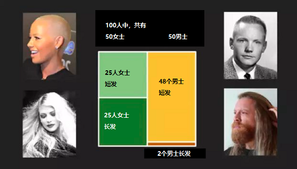

人工智能初步-数学贝叶斯推理
本项目通过Geogebra可视化数学工具，学习贝叶斯推理（贝叶斯概率）。
贝叶斯推理（法则）
贝叶斯推理理念源自托马斯·贝叶斯。托马斯·贝叶斯（Thomas Bayes)，是英国神学家、数学家、数理统计学家和哲学家，1702年出生于英国伦敦，做过神甫，1742年成为英国皇家学会会员。
贝叶斯定理现在很多人在研究，不少人相信贝叶斯定理和人脑的工作机制很像，因此成为机器学习的基础。
比如，你和对方聊天的时候，如果对方说出“虽然”两个字，你大概就会猜测，对方后继九成的可能性会说出“但是”。
我们的大脑看起来就好像是天生在用贝叶斯定理。贝叶斯公式如下：
\(P(A|B) = {P(B|A) P(A) \over P(B)}\)
公式可能很抽象，下面举一个案例：
贝叶斯推理
案例：当你在电影院售票大厅等待入场看电影时，发现有人掉了电影票，根据背影看到此人是长发，你能判断是男士还是女士吗？
根据常量，我们可以说很大可能是女士，而非男士。但是女士的概率多大那？
已知来看电影的人群情况如下：

说明：用Geogebra数学工具来定义男、女比例，男、女长发的比例？
说明：
滑动最左边的菱形块，调整长发女士占所有女士的概率。
滑动最右边的菱形块，调整长发男士占所有男士的概率。
滑动中件的菱形块，调整女士与男女占总人数的比例。
2.任务：调整三个菱形块，完成以下问题推理。
问题：
\(P(A)\):代表女士占总人数概率。\(P(A') = 1- P(A)\)：代表男士占总人数的概率
\(P(B)\):代表长发概率。
总人数中女士占：\(P(A)=50\%\)；男士占：\(P(A') = 1- P(A)=50\%\)
女士长头发概率：\(P(B|A)=50\%。\)；男士长头发概率：\(P(B|A')=4\%。\)
求\(P(A|B)：\)：即看到背影是长发，我们推断是女士的概率大小？(通过工具计算为0.92)